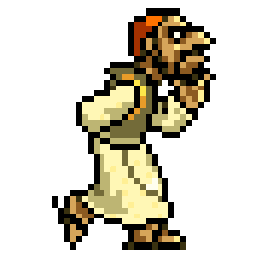¿Que es una ave? y tipos de aves
corporal,con el cuerpo cubierto de plumas,tetrapodos,es decir tienen 4 extremidades,dos patas dos alas y capacidad de volar.

Hay más de 9.000 tipos, o mejor dicho, especies diferentes de aves e incluso algunas que no vuelan. En una primera clasificación muy general tenemos:
- Aves Corredoras:son aquellas queno pueden volar, con alas reducidas y no tienen quilla
·hueso en el esternón donde se unen las costillas·. Por lo general tienen patas largas. A este grupo pertenece el avestruz.
- Aves de Vuelo:Aquellas que por su fisonomía pueden volar. Parece una tontería pero para poder volar tienen que tener ciertas características como que los músculos
de las extremidades superiores, las alas en las aves, deben de ser fuertes y a la vez flexibles. Lo cual requiere que el esternón, hueso en el pecho donde se unen las costillas
, sea en forma de quilla; y por eso también se les llaman Aves Carenadas.
¿Que es una especie en extincion?
Una especie se considera en peligro de extinción, sea vegetal o animal, cuando todos los miembros con vida de dicha especie están en peligro de desaparecer.
Esto se puede deber tanto a la depredación directa sobre la especie como a la desaparición de un recurso del cual depende su vida, tanto por la acción del hombre
, debido a cambios en su hábitat, como producto de desastres naturales, o por cambios graduales del clima.
Conoce mas acerca de que es una especie en extincion Aqui
Volver al Inicio
Introduccion a las aves de Mexico.
Las aves son uno de los grupos de vertebrados mas exitosos y diversos del mundo.Gracias a su capacidad de adaptacion,ocupan practicamente todos los ambientes de
nuestro mundo,desde ecuador hasta los polos,desde mar abierto hasta las altas montañas y desde los desiertos hasta las selvas.Las aves son sin duda el grupo de animales
mejor conocido,estudiado y apreciado.De acuerdo con Clements et al (2014) en el mundo existen 10 404 especies de aves,lo que situa al pais como el onceavo con mayor riqueza
avifaunistica a nivel mundial.Esta riqueza de especies se explica por la ubicacion de Mexico eentre las regiones biogeograficas Neotropical y Neartica,por su compleja topografia
e historia geologica y tambien por sus extensos litorales y ambientres insulares,que en conjunto generan una enorme diversidad de ambientes y habitas a lo largo y ancho del terrirorio
En este contexto,Mexico es el hogar de 102 especies endemicas,es decir,que casi una de cada 10 especies de las aves mexicanas se encuentra de manera exclusiva en nuestro pais.
Podras observar que aves estan en peligro de extincion en esta tabla:
| Ave | Descripcion | Taxonomia | Donde Vive | Imagen del ave | ||||||||
|---|---|---|---|---|---|---|---|---|---|---|---|---|
| Aguila Albinegra | El águila viuda (Spizaetus melanoleucus), también conocida como aguilucho blanquinegro,y águila tazor chica es una especie de ave Accipitriforme de la familia Accipitridae que vive en América, desde México, América Central, Sudamérica hasta el norte de Argentina, desde el nivel del mar hasta 1.500 msnm. | *Animales: Reino Animalia *Cordados:Filo Chordata *Vertebrados:Subfilo Vertebrata *Aves:Clase Aves *Águilas, Aguiluchos Y Milanos: Orden Accipitriformes *Género Spizaetus |  |  | ||||||||
| Aguila Real | El nombre científico de este rapaz es Aquila Chrysaetos, aunque comúnmente se la conoce como águila real, en otros lugares la denominan águila caudal, destacando sobre todo por tener un plumaje marrón oscuro, pero que cuando le da la luz del Sol se vuelve brilloso y este color cambia a una tonalidad más clara. Solamente en las patas o por el vientre este color se clarea siendo un marrón mezclado con blanco, aunque según la subespecie puede ser incluso blanca por completo. Otra de las características físicas que puedes ver es que tanto su pico (aunque en menor proporción) como las garras son de un color amarillo intenso. | *Reino:Animalia *Clase:Aves *Orden:Accipitriformes *Familia:Accipitridae |  |  | ||||||||
| Quetzal Mesoamericano | El quetzal es un ave con iridiscencia, lo que implica que dependiendo de la cantidad y calidad de luz, los individuos adultos se aprecien algunas veces de color rojizo, azul y verde azuloso. Por ello, en la literatura se encuentren descripciones de color del plumaje como verde - amarillo (Labastille et al. 1972) o verde intenso, verde dorado, azul o violeta (Skutch 1944). Hembra adulta es esmeralda en alas y dorso, no muy diferente al verde de los machos como fue anotado por Skutch (1944) pero si es ligeramente menos iridiscente. Cabeza verde opaco que a la distancia se interpreta como color gris (Peterson y Chalif 1994), rojo iridiscente presente sólo en la parte baja del vientre, plumas de la cola con rayas negras sobre un color blanco de fondo, pico negro y, en etapas preadultas puede ser de color gris oscuro. El macho es color verde intenso excepto pecho y vientre que son rojos y cola totalmente blanca. En machos preadultos la cola tiene un color blanco-negruzco que se va convirtiendo a blanco total a medida que alcanza la madurez sexual. Los machos reproductivos presentan, además, cuatro plumas cobertoras caudales, dos de las cuales alcanzan una longitud mayor de entre 890 hasta 1007 mm en la subespecie P. m. mocinno , mientras que en P. m. costaricensis miden entre 480 y 700 mm. | *Reino:Animalia *Clase:Aves *Orden:Trogoniformes *Familia:Trogonidae | 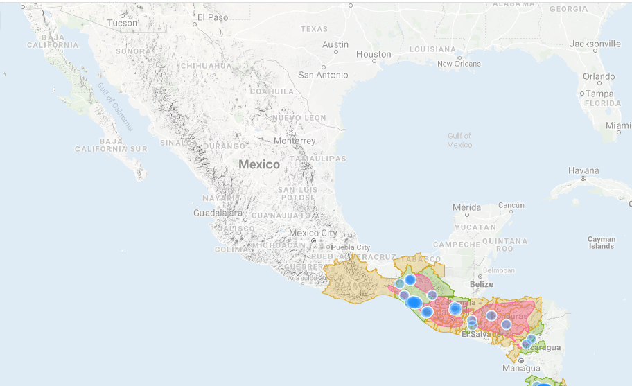 | 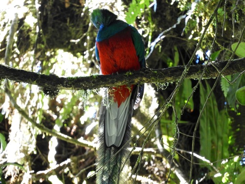 | ||||||||
| Tucán Pico Canoa | De las tres especies de tucanes que se distribuyen en México, esta es la más grande con una longitud de entre 50 y 59 cm y un peso aproximado de 500 g (Chávez 1984, Pérez 1996, Chávez y Santana 2000). Plumaje negro que contrasta con el amarillo del cuello y pecho, parte superior de la cabeza marrón, piel alrededor del ojo verde, iris y tarsos azules, pico largo y aserrado color verde claro con una combinación de tonos azul y amarillo, destacando la punta anaranjado-rojizo; cobertoras superiores de la cola blancas e inferiores rojas. El macho tiene el pico más largo que la hembra (Skutch 1971). | *Reino:Animalia *Clase:Aves *Orden:Piciformes *Familia:Ramphastidae | 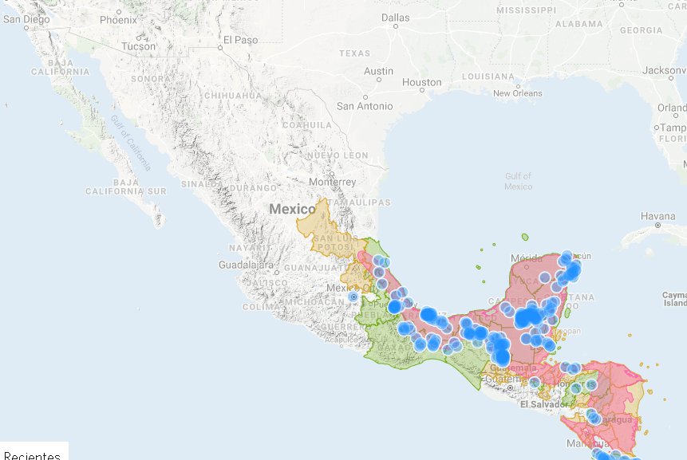 | 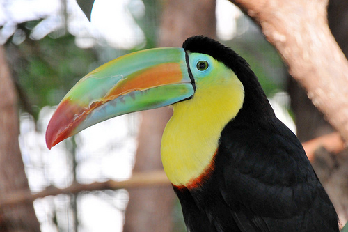 | ||||||||
| Pato Real | Esta especie está considerada dentro de un grupo de patos conocidos en términos generales como patos de percha, dentro de la tribu Cairinini (Howell y Webb 1995, Bellrose 1980). Este grupo de patos (tribu) está integrado por nueve géneros y trece especies a nivel mundial (Bellrose 1980). Estos patos comparten las características de poseer las patas proyectadas más hacia el frente con respecto a la base del cuerpo, que los patos del género Anas, tienen garras fuertes y filosas, dedos traseros bien desarrollados y alas amplias. Cairina moschata es un pato Neotropical grande, similar en tamaño a un ganso (Leopold 1959). El tamaño es de 66 a 86.5 cm con peso promedio en machos de 2 a 4 kg y en hembras de 1 a 1.5 kg) y de cola larga, el macho es considerablemente más grande que la hembra pero el plumaje es similar en ambos sexos. La coloración del plumaje va de un café-negruzco a negro y posee una iridiscencia en matices verdes a morados o púrpuras en la parte superior. Sus hombros y la cara inferior de las alas son de color blanco (Feekes 2000, Howell y Webb 1995). Los machos presentan carúnculos carnosos en torno al pico y en ocasiones en la parte posterior del ojo, el pico es de tonalidad rosada, el rostro carece de plumaje y es de coloración negruzca al igual que la coloración de las patas (Howell y Webb 1995). En las hembras la región del rostro sin plumaje es más reducida y no presentan los carúnculos. Los viejos de la especie desarrollan una cresta (Leopold 1959). Formas domesticadas de esta especie presentan coloraciones negra, blanca, negra y blanca y verde y blanca. | *Reino:Animalia *Clase:Aves *Orden:Anseriformes *Familia:Anatidae | 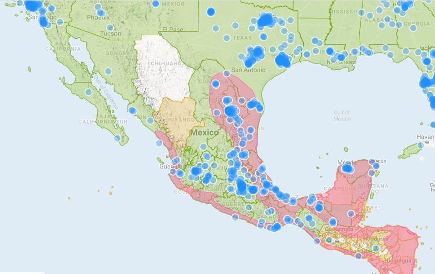 | 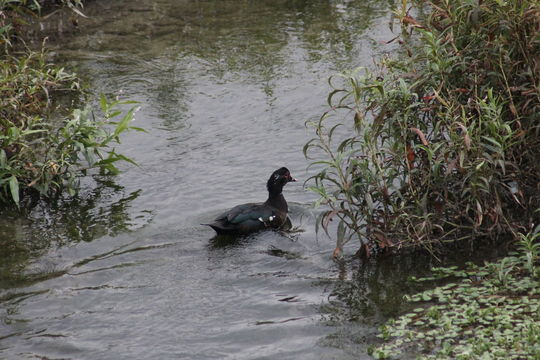 | ||||||||
| Pavo del Monte | Es un ave grande, de 80 a 102 cm de longitud total. Los machos tienen la cabeza y la parte superior del cuello desnudas, de color azul brillante y con verrugas de color naranja. Las verrugas son más abundantes hacia la parte superior de la cabeza (las más grandes pueden ser infladas por el ave). También presenta un área desnuda de color rojo alrededor de los ojos. Las patas son de color rojizo. El plumaje del cuello y del dorso tiene reflejos metálicos verdiazules, las plumas intermedias del ala son de color cobrizo. La cola es moderadamente larga y cada pluma termina en una mancha de color azul oscuro o índigo, rematada por un extremo cobrizo. Las hembras son similares a los machos, de tamaño menor, con la cola mucho más corta y las verrugas mucho menos desarrolladas. | *Reino:Animalia *Clase:Aves *Orden:Galliformes *Familia:Phasianidae | 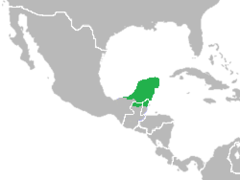 | 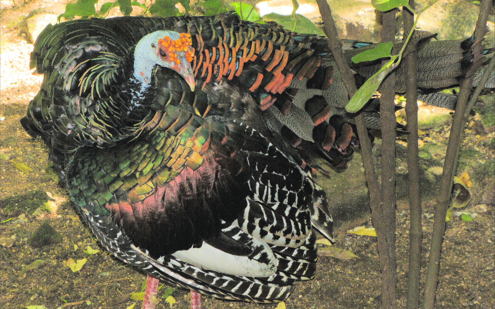 | ||||||||
| Guacamaya Verde | Es un ave grande, mide entre 675 y 750 mm (Peterson y Chalif, 1998) lo que la hace ocupar el sexto lugar en tamaño dentro del género Ara. Presenta color verde, tono mate en la nuca, cuello y corona. Las plumas cobertoras y secundarias de las alas presentan un color verde olivo oscuro; frente y mejillas color rojo carmesí, la rabadilla y coberteras de la cola presentan color azul turquesa. El pico es negro mate y el iris es color amarillo, patas y dedos color gris oscuro. Los juveniles son similares, excepto por las plumas escapulares o cobertoras del ala con borde distal color verde pálido y las plumas de la garganta con tono café, el iris va de color amarillo pálido a café claro (Forshaw, 1978). | *Reino:Animalia *Clase:Aves *Orden: Psittaciformes *Familia:Psittacidae | 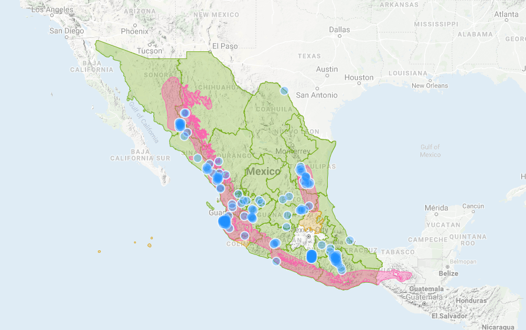 | 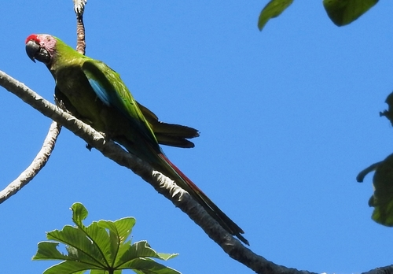 | ||||||||
| Gallina del monte | Parece a simple vista un pollo pequeño, pero con el cuerpo más redondo y casi sin cola. La hembra tiene un comportamiento muy especial, ya que desatiende sus obligaciones maternas y el macho tiene que hacerse cargo de las crías: desde prepararles el nido hasta cuidar de los polluelos. Su vuelo es similar al de un faisán, pero la mayor parte del tiempo permanece en tierra, mientras no se vea amenazada. Busca semillas e insecto en los claros, aunque está mucho tiempo en la espesura. Las gallinas de monte pertenecen a la familia tinamidae y al orden de los tinamiformes. Son aves primitivas estrechamente relacionadas con las avestruces. En México habitan cuatro especies y todas tienen en común su carácter escurridizo y poca tendencia a volar mientras no sea necesario. | *Reino:Animalia *Clase:Aves *Orden:Galliformes *Familia: Odontophoridae | 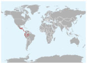 | 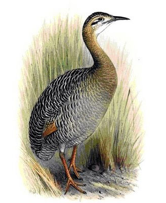 | ||||||||
| Loro Tamaulipeco | Loro Amazona de tamaño mediano con cola corta; la longitud total incluyendo cola es de aproximadamente 33 cm, con un peso de 316 g. Tienen la corona rojo brillante rodeada de azul violeta desde la parte posterior del supercilium hasta los lados de la parte posterior de la corona, algunas veces extendiéndose a los lados del cuello e incluso de la nuca. Las plumas de las partes posteriores de la corona y del cuello presentan el borde oscuro, lo que les da una apariencia escamosa. Las mejillas son verde brillante sin apariencia escamosa. Presentan un parche rojo en las secundarias exteriores, o bien remiges color negro azuloso. Los hombros y la base de la cola son verdes, la cola con un borde verde amarillento. El pico es color amarillo-crema pálido, el anillo orbital y las patas gris pálido. Los juveniles o subadultos presentan el rojo limitado a la frente y algunas veces en algunas plumas esparcidas en la corona; el azul en los lados de la corona tiende a formar una franja ancha sobre y atrás de los ojos (Enkerlin-Hoeflich y Hogan, 1997). | *Reino:Animalia *Clase:Aves *Orden:Psittaciformes *Familia:Psittacidae | 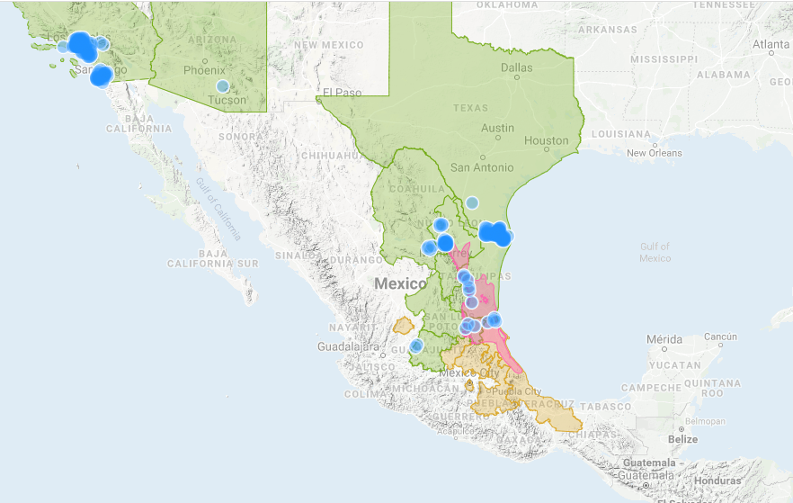 | 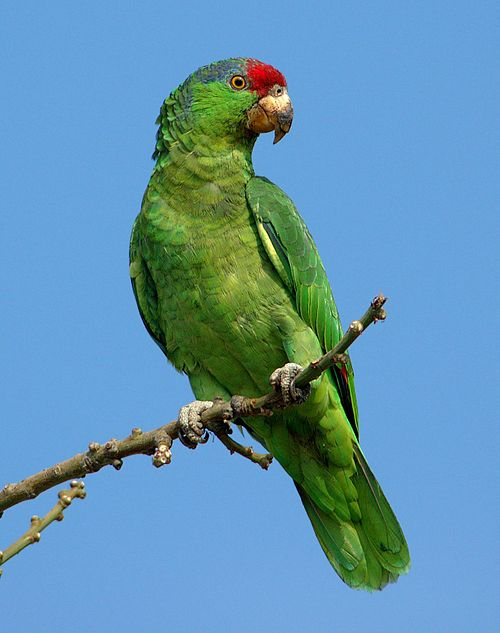 | ||||||||
Aqui te dejamos un video donde podras conocer otras 6 aves en peligro de extincion.
Causas y Consecuencias
Causas:
La principal causa de extinción como especies, es el factor humano, ya que ha causado la destrucción de habitas, y además es el culpable de capturas ilegales, cazas ilegales, introducción de especies exóticas, captura de animales salvajes, entre otros.
Consecuencias:
Al extingirse una especie de ave se ve alterado todo un ecosistema completo ya que las aves cumplen un papel muy importante dentro de un ecosistema y eso trae como consecuencia un desequilibrio en la biodiversidad,la falta de balance en la proliferacion de otras especies aun existentes ya sea plantas animales o ambos.
Volver al Inicio
Acciones para su conservacion
La conservacion tiene como objetivo proteger el mundo natural y mantener la biodiversidad mediante una ciudadosa conservacion y control de los habitats existentes asi como restaurar las zonas que han sido dañadas oh degradadas.Aqui te presentamos algunas acciones para su conservacion
- Una causa común de muerte entre las aves es que chocan contra las ventanas de casas o edificios, pues ven reflejada la vegetación exterior o simplemente no sabe que existe un vidrio en la ventana. La solución a esto es muy simple: poner cortinas, pues impide el reflejo en los cristales de la luz del sol o de los focos interiores y visibiliza las ventanas.
- No comprar aves silvestres, pues lo más seguro es que hayan sido capturadas ilegalmente, y al hacerlo estamos contribuyendo a su extinción.
- Evitar el uso de plástico en botellas o bolsas, y sustituir ambas por reusables. La aves marinas (y también las tortugas) pueden comer bolsas de plástico o tapas de botellas PET por error, pues las confunden, por ejemplo, con medusas u otros alimentos; y los pedazos de plástico se les alojan en la garganta o el tracto digestivo, provocando la muerte por inanición o malnutrición.
- Darles a las aves un mini-hábitat para comer y reponerse en nuestro jardín: Si decides ayudar a las aves instalando comederos o bebederos, hay que tener en cuenta el ubicarlos donde no lleguen los gatos, perros ni las ratas y recordar lavarlos todos los días, para evitar que las enfermedades se propaguen a las aves.
- La aves son muy vulnerables al cambio climático. Por ello, nosotros podemos contribuir mucho en este sentido al disminuir el calentamiento global siendo conscientes de nuestro consumo de energía eléctrica al usar racionamente los electrodomésticos, y evitar el uso del automóvil en viajes cortos, sustituyéndolo por la bicicleta o la caminata. Y si usamos el automóvil, manejar despacio evitará que arrollemos en el camino algún ave u otro animal.
-
Volver al inicio
Fuentes Bibliograficas
La informacion utilizada en esta pagina web fue proporcionada por:
Naturalista.mx
Wikipedia
Volver al inicio
¿Que te parecio nuestra pagina? Por favor dejanos tu opinion en la siguiente encuesta.
 ¡Gracias por visitarnos!
¡Gracias por visitarnos!
Tu eres el unico que puede salvar a las aves
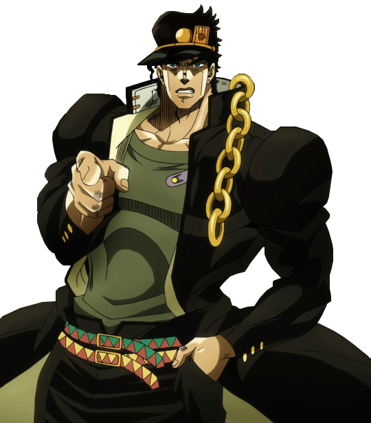